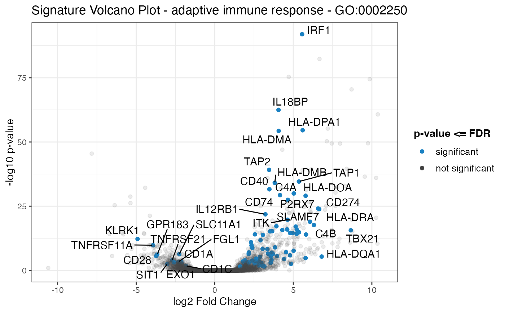
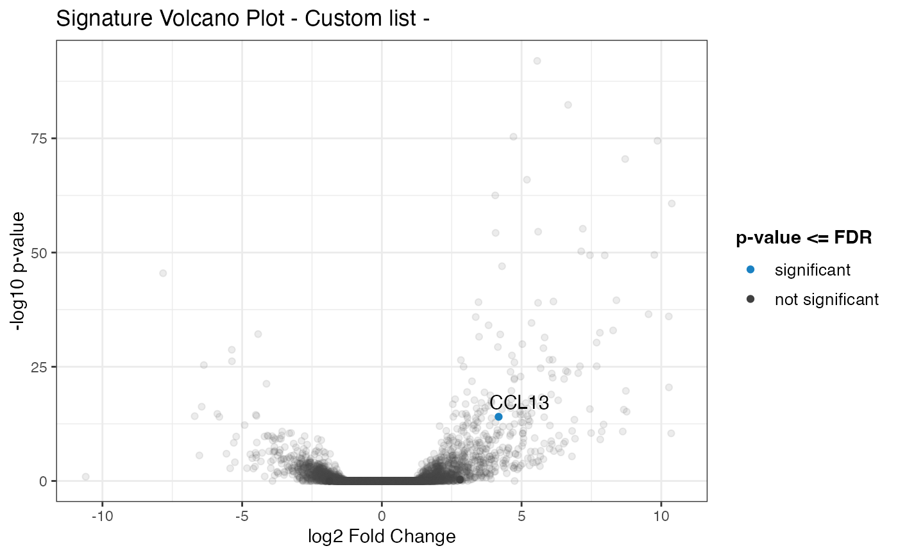

Plot a volcano plot for the geneset of the provided data, with the remaining genes as shaded dots in the background of the plot.
Usage
signature_volcano(
res_de,
annotation_obj = NULL,
geneset_id = NULL,
genelist = NULL,
FDR = 0.05,
color = "#1a81c2",
volcano_labels = 25,
plot_title = NULL
)Arguments
- res_de
A
DESeqResultsobject.- annotation_obj
A
data.frameobject with the feature annotation information, with at least two columns,gene_idandgene_name.- geneset_id
Character specifying the gene set identifier to be plotted.
- genelist
A vector of character strings, specifying the identifiers contained in the
rownamesof theres_deinput object.- FDR
Numeric value, specifying the significance level for thresholding adjusted p-values. Defaults to 0.05.
- color
Character string to specify color of filtered points in the plot. Defaults to #1a81c2 (shade of blue).
- volcano_labels
Integer, maximum number of labels for the gene sets to be plotted as labels on the volcano scatter plot. Defaults to 25.
- plot_title
Character string, to specify the title of the plot, displayed over the volcano plot. If left to
NULLas by default, it tries to use the information on the geneset identifier provided.
Value
A plot returned by the ggplot() function
Examples
library("macrophage")
library("DESeq2")
library("org.Hs.eg.db")
library("AnnotationDbi")
library("GeneTonic")
#>
#> Attaching package: ‘GeneTonic’
#> The following objects are masked from ‘package:mosdef’:
#>
#> deseqresult2df, gene_plot, geneinfo_2_html, go_2_html, map2color,
#> signature_volcano
# dds object
data("gse", package = "macrophage")
dds_macrophage <- DESeqDataSet(gse, design = ~ line + condition)
#> using counts and average transcript lengths from tximeta
#> Warning: Direct call of 'as.data.frame.factor()' is deprecated. Use 'as.data.frame.vector()' or 'as.data.frame()' instead
#> Warning: Direct call of 'as.data.frame.factor()' is deprecated. Use 'as.data.frame.vector()' or 'as.data.frame()' instead
#> Warning: Direct call of 'as.data.frame.factor()' is deprecated. Use 'as.data.frame.vector()' or 'as.data.frame()' instead
#> Warning: Direct call of 'as.data.frame.integer()' is deprecated. Use 'as.data.frame.vector()' or 'as.data.frame()' instead
#> Warning: Direct call of 'as.data.frame.factor()' is deprecated. Use 'as.data.frame.vector()' or 'as.data.frame()' instead
#> Warning: Direct call of 'as.data.frame.factor()' is deprecated. Use 'as.data.frame.vector()' or 'as.data.frame()' instead
#> Warning: Direct call of 'as.data.frame.factor()' is deprecated. Use 'as.data.frame.vector()' or 'as.data.frame()' instead
#> Warning: Direct call of 'as.data.frame.numeric()' is deprecated. Use 'as.data.frame.vector()' or 'as.data.frame()' instead
#> Warning: Direct call of 'as.data.frame.factor()' is deprecated. Use 'as.data.frame.vector()' or 'as.data.frame()' instead
#> Warning: Direct call of 'as.data.frame.factor()' is deprecated. Use 'as.data.frame.vector()' or 'as.data.frame()' instead
#> Warning: Direct call of 'as.data.frame.factor()' is deprecated. Use 'as.data.frame.vector()' or 'as.data.frame()' instead
#> Warning: Direct call of 'as.data.frame.factor()' is deprecated. Use 'as.data.frame.vector()' or 'as.data.frame()' instead
#> Warning: Direct call of 'as.data.frame.integer()' is deprecated. Use 'as.data.frame.vector()' or 'as.data.frame()' instead
#> Warning: Direct call of 'as.data.frame.factor()' is deprecated. Use 'as.data.frame.vector()' or 'as.data.frame()' instead
#> Warning: Direct call of 'as.data.frame.factor()' is deprecated. Use 'as.data.frame.vector()' or 'as.data.frame()' instead
rownames(dds_macrophage) <- substr(rownames(dds_macrophage), 1, 15)
dds_macrophage <- estimateSizeFactors(dds_macrophage)
#> using 'avgTxLength' from assays(dds), correcting for library size
# annotation object
anno_df <- data.frame(
gene_id = rownames(dds_macrophage),
gene_name = mapIds(org.Hs.eg.db,
keys = rownames(dds_macrophage),
column = "SYMBOL",
keytype = "ENSEMBL"
),
stringsAsFactors = FALSE,
row.names = rownames(dds_macrophage)
)
#> 'select()' returned 1:many mapping between keys and columns
# res object
data(res_de_macrophage, package = "GeneTonic")
res_de <- res_macrophage_IFNg_vs_naive
# res_enrich object
data(res_enrich_macrophage, package = "GeneTonic")
res_enrich <- shake_topGOtableResult(topgoDE_macrophage_IFNg_vs_naive)
#> Found 500 gene sets in `topGOtableResult` object.
#> Converting for usage in GeneTonic...
res_enrich <- get_aggrscores(res_enrich, res_de, anno_df)
signature_volcano(res_de,
res_enrich,
anno_df,
geneset_id = res_enrich$gs_id[1]
)
#> Warning: ggrepel: 48 unlabeled data points (too many overlaps). Consider increasing max.overlaps

# alternatively
chemokine_list <- c(
"ENSG00000108702",
"ENSG00000172156",
"ENSG00000181374",
"ENSG00000276409"
)
signature_volcano(res_de,
res_enrich,
anno_df,
genelist = chemokine_list
)
#> Warning: Some of the provided gene ids were not found in the SummarizedExperiment
#> Not found: ENSG00000172156
